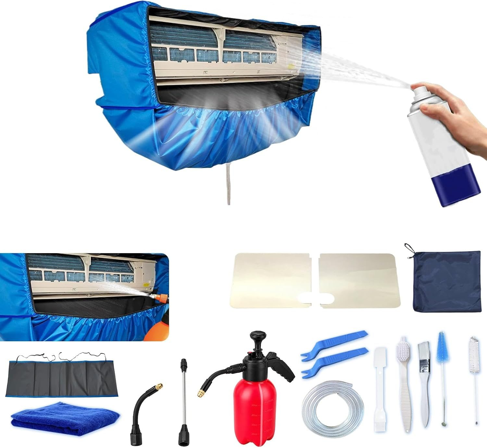

KIKEPILM
Klimaanlagen-Reinigungsset mit verbesserten Seitenteilen, Mini-Split-Reinigungsset, Extra Space-Klimaanlagen-Reinigungsbeutel (Dunkelblau, Etwas kleiner, 18-teilig)
58,90 €
KIKEPILM-Preis, inkl. MwSt.
| Marke | KIKEPILM |
| Modell (ASIN) | B0HGFQ5BNW |
| Farbe | Dunkelblau (mit Wasserkocher) |
| Größe | Etwas kleiner |
| Preis | 58,90 € |
| Währung | EUR |
Kauf, Versand und Rückgabe erfolgen über Amazon.
Über diesen Artikel
- 1. Verbesserte Seitenwände und wasserdichtes 2025 PVC-Design Das Kikepilm-Reinigungsset für Klimaanlagen besteht aus dem neuesten 2025-PVC-Material. Verstärkte Seitenwände verhindern Leckagen und schützen die Wände bei der gründlichen Reinigung, während der extrabreite Abflusshahn Schmutz und Wasser effektiv auffängt. Ideal für Split-Klimaanlagen, Wandklimaanlagen und Split-Wärmepumpen
- 2. Einfache Installation mit intelligenten und benutzerfreundlichen Tools Das Kit ist für eine schnelle, werkzeuglose Installation konzipiert und umfasst farbcodierte Bürsten (weiche/harte Borsten) und eine ergonomische Hebelplatte zum sicheren Entfernen der Verkleidung. Dank des leichten, faltbaren Designs und der intuitiven Aufbewahrungsfächer können Sie in wenigen Minuten mit der Reinigung beginnen, ohne dass besondere Fähigkeiten erforderlich sind! Ideal für Heimwerker und Klima-Profis
- 3. Mini-Split-Reinigungsbeutel, extrem langlebig und tragbar, große Kapazität Dieses Mini-Split-Reinigungsset besteht aus neuem und verbessertem rissfestem PVC-Material und enthält 1 Mini-Split-Reinigungsbeutel; 1 x Mini-Reinigungsbeutel mit Unterteilung; 1 * Mehrzweck-Reinigungsbürste mit groben Borsten; 1 * Wandschutztuch; 1 x 9,1 Fuß Auspuffrohr; 2* Hebelplatten; 2* Seitenteile; 1* Mehrzweckbürste (weiche Borsten); 1* Fugenbürste (weiche Borsten); 1 Handtuch; 1 * Filterschlitzbürste; 1 * Reinigungsrollenbürste für den Luftauslass; 1 * Verpackungsbeutel; 1 2-Liter-Flasche Wasser; 1 * frei faltbares Stangenkopfzubehör;
- 1 * langes Stangenkopfzubehör (ausgefahren 16 cm/6,3 Zoll); 1 * kurzes Düsenzubehör (bereits auf der Wasserflasche installiert); Das Reinigungsset für Klimaanlagen ist leicht zu transportieren und eignet sich perfekt für Arbeiten vor Ort oder die Wartung zu Hause
- 4. Tiefenreinigung zur Verbesserung der Klimaanlagenleistung Unsere professionellen Rohrreinigungswerkzeuge und Walzenbürsten. Stellen Sie den Luftstrom wieder her, senken Sie den Energieverbrauch um 25 % und verlängern Sie die Lebensdauer Ihrer Klimaanlage. Geeignet für Mini-Split-Klimaanlagen, Fensterklimaanlagen und zentrale Klimaanlagen